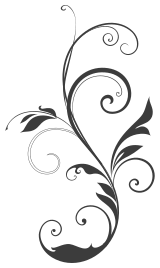

Bye bye Dom
Tu nous manques
Les Hypnodingues
♫♪♫ Cette page d’hommages peut être parcourue avec plusieurs ambiances sonores. Par défaut, c’est l’ambiance que Dom a choisie qui est jouée. Il s’agit de Nathalie Carbonneau – Je me battrai pour moi. Sur iPad, il faut presser sur play en bas de la page pour entendre la musique. • Nathalie Carbonneau – Je me battrai pour moi • Tiffany Poon – Chopin Nocturne in b-flat minor, Op.9 No.1 • Jeff Buckley – Hallelujah • Sans musique ♫♪♫
Ce site est disponible en format PDF pour l’impression papier. Pour télécharger les fichiers PDF ci-dessous, il suffit de cliquer avec le bouton de droite sur les liens et de choisir « Enregistrer sous... ». Version PDF pour l’impression A4
Bye bye Dom Version PDF pour l’impression d’une plaquette A5. Il y a un document pour le recto et un autre pour le verso. Cette version a été imprimée en quatre exemplaires que l’on a transmis le jour des obsèques : un pour elle, et les autres pour les trois « hommes de sa vie ».
Bye bye Dom A (recto)
Bye bye Dom B (verso)
Dom & Gilbert
– C’était une grande joie de vous avoir tous rencontrés, d’avoir partagé plein de choses et j’espère que vous allez tous aller au chalet ! J’espère... ce serait génial... parce qu’il se passerait plein de choses là haut... – Alors tu viendras !? – Ah oui ! – Et quand on ira se balader, tu viendras aussi cette fois ? – Alors là, je pense qu’il n’y aura pas de souci !
Message de Nicolas
Alors voilà, c’est aujourd’hui, vendredi 31 mai 2013, que tu as décidé d’aller rejoindre ton fils Damien dans l’au-delà. La vie est un mystère et la mort est peut-être ce qu’il y a de plus mystérieux dans la vie. Car tu le sais mieux que nous maintenant, la mort n’est pas l’opposé de la vie, l’opposé de la mort, c’est la naissance. La vie n’a pas contraire. Toi, tu continueras à vivre dans nos souvenirs et au ciel avec les anges. Quel choc ça a été quand tu nous as envoyé ton message pour nous avertir de ta décision de t’autolibérer. Beaucoup d’émotions, beaucoup de tristesse. Même si je respecte ton choix, je dois avouer que c’est dur de l’accepter. Le temps était maussade aujourd’hui, au propre, comme au figuré. Je suis allé faire une balade sous la pluie. Il n’y avait quasiment personne au bord du lac Léman. Ça m’a fait drôle de me sentir vivant. J’ai ressenti la vie comme étant quelque chose de spécial, à vivre maintenant et intensément. Après, c’est trop tard. Peut-être que les morts peuvent nous rendre plus vivants. Je l’espère en tout cas. Il paraît que tu es partie sereinement, que tout s’est parfaitement déroulé et que tu as été magnifique, comme le soir d’avant. Alors c’est cette image de toi que je garderai. Une Dom, sereine, sûre d’elle-même et qui va de l’avant dans la joie et la bonne humeur. En tout cas merci d’avoir été là. Sans toi, les Hypnodingues n’auraient peut-être pas existé et ça aurait été une grande perte pour nous toutes et nous tous. Plein de bises, Nicolas
Citation de Rûmî
Vous êtes né rempli de potentiel Vous êtes né rempli de bonté et d’assurance Vous êtes né plein de rêves et d’idéaux Vous êtes né revêtu de grandeur Vous êtes né avec des ailes Vous n’êtes pas né pour ramper Alors abstenez-vous. Vous avez des ailes. Apprenez à vous en servir et vous vous envolerez. [ Djalâl ad-Dîn Rûmî, mystique persan du 13e siècle ]
Message de Christophe
Regarde les oiseaux dans les cieux humides et argentés Écoute la brise marine, chargée de sel Le soleil est rouge au coucher Égoïste ! En moi, la brûlure, l’incendie Et ta voix limpide, sereine et détendue Toi qui braves les interdits Des gens bien portants, rien n’est dû ! Quand la vie t’écharpe Alors, que la vie s’échappe ! En bas, les mystères de la vie En bas, les mystères de la mort Toi dis-moi à quoi sert de mettre dans la vie Du sel, quand tombe le corps Quand la vie n’est qu’une plaie béante Quand les lames se font lancinantes Avaler des rasoirs Et des mots dérisoires Quand les maux sont silences Quand tes silences sont poèmes Quand les poèmes sont je t’aime Dis-moi avec quel breuvage As-tu célébré ton passage ? Toi qui ouvres la porte de tous les possibles Toi, ta voie ! Livide et reine et étendue Toi qui exhortes tes anges et l’invisible Toi à plus fort tu t’es rendue Là-bas, les mystères de la mort Là-bas, les mystères de la vie Toi qui ouvres les ailes du temps Toi tu as choisi les parfums du printemps Le besoin d’une escale D’un havre d’autre port Quand toi tu souffres en rafale Et que le vent te dévore Alors toi tu as le besoin paisible des bateaux Et les émotions se font sillages L’esprit et l’âme sont des oiseaux Toi, ta flamme magnifique, le plumage Fort est l’appel de la mer, et les cris des goélands Quand, toi tu seras loin du corps en tempêtes Alors loin des yeux humides, loin des tempêtes du cœur Alors dans le ciel limpide, les oiseaux chanteront en cœur Toi, soleil, flamme magnifique, ouvres l’horizon à tes âmes sœurs Christophe
Message de Laetitia
Dominique, Dans mon cœur tu resteras Où que tu sois. Merveilleux souvenirs Imprégné de nos rires. Nouvel envol pour toi Illuminé de joie. Que ce voyage t’offre Un nouveau départ Eternellement rempli d’Amour ! Je t’admire d’avoir suivi ton cœur, d’avoir osé faire ce que tu désirais profondément faire pour toi ! Comme le dit Gilbert, tu es un Maître ! Je t’aime fort Dominique ! Laeti
Message de Monique
Durant toutes ces années de souffrances et privations, une formidable « Énergie de Vie » t’a poussée à te battre avec courage pour vivre et rayonner autour de toi. Tu as compris que tu avais atteint le bout du chemin sur cette terre et tu as choisi de suivre ton Guide pour une Nouvelle Aventure. Ton souvenir restera toujours dans mon cœur. Je te souhaite « Bon Voyage ». Au Revoir ! Monique
Message d’Audrey
Dominique... merci. Merci infiniment pour tout ce que tu nous as appris à tous, merci pour cette belle énergie et ce rayonnement que tu as partagé.
J’admire ton courage qui t’a poussé à entrer dans la suite du grand voyage, la tête haute, sereine, en Conscience. Et tout ça si bien préparé, avec amour.
La mort est le couronnement de la vie et tu l’as couronnée d’une façon à la fois surprenante et magnifique. C’était le choc au début pour moi, et puis au fur et à mesure que j’en ai appris un peu plus sur ton histoire, j’ai fini par savoir du fond du cœur que tu as fait ce qu’il fallait, à tes yeux, et je t’accompagne en pensée, pour que la suite du voyage soit belle.
Ton énergie sera toujours vivante parmi nous, nous apprendrons encore ensemble, au-delà de l’espace et du temps ; parce que l’amour n’appartient pas à une dimension... Lorsqu’il est, il est partout à la fois.
Avec amour.
Audrey
♫♪♫ À toi Dom pour le grand voyage ! ♫♪♫
Message de Céline
Ma chère Dominique, Te connaître a été un véritable plaisir. La vie n’a pas toujours été un long fleuve tranquille pour toi, mais tu nous as prouvé maintes fois que tu étais forte et que dans la vie, il fallait se battre. Tes souffrances sont maintenant abrégées, tu as rejoint les étoiles et ton fils chéri Damien... Céline
♫♪♫ Musique pour continuer à méditer ensemble ♫♪♫
Message de Geneviève
Dominique, Nous avions convenu d’escalader le Piton des neiges ensemble dans l’île de la Réunion à 3071 m, laissant ta chaise roulante dans un passé presque oublié. Ton destin en a décidé autrement et s’il s’agissait de prendre de la grandeur et de la hauteur pour admirer le sublime paysage, tu es partie avant moi. Pourtant avec toi, j’ai compris encore plus aujourd’hui que les plus beaux paysages sont encore ceux du partage et de l’expression de nos cœurs. Tu m’as accueilli sur le chemin, je t’ai invitée sur le mien, nous avons ri, nous avons fait des détours et emprunté parfois le sentier des écoliers, mais la destination était bien la réunion, nul besoin d’île en vérité. Merci Dominique pour ces magnifiques échanges, avec tout le groupe des Hypnodingues, tu resteras un joyau précieux au plus profond de nos âmes. Geneviève
Message de Gilbert
Dominique, Que dire... tu sais que je préfère la pratique à la théorie... Les actes au discours... Quel bel envol tu as fait lors de notre dernière hypnose... quel beau chemin tu m’as montré. Tu m’as choisi comme coach, et quel parcours, que d’émotions, d’expériences nous avons traversés... merci pour tout ce que j’ai appris à tes côtés... Merci aussi de nous avoir réunis... sans toi, ma vie ne serait pas ce qu’elle est aujourd’hui, je n’aurais pas les amis que j’ai dans ma vie maintenant... Me reste qu’une seule chose à dire, Bravo ! Félicitation pour tout ce que tu as accompli, ce que tu as fait pour toi, ton combat, ton éveil, ta route, et tout cet Or que tu as su redistribuer aux autres... ton aide, ta présence... Et alors, tu peux simplement de là où tu es... laisser tout doucement et avec chaque partie de tout ton être... cette lumière peut-être violette encore qui t’entoure certainement peut-être déjà... tout en t’absorbant davantage dans ses changements qui s’opèrent maintenant ou juste après... comme un magnifique feu d’artifice... qui naît et grandit de ton cœur... vers ce qui subsiste... en nous de toi... pour un temps ou plus longtemps encore... et encore... comme un message qui reviens d’une partie de toi... intemporelle, vers cette partie de moi, de nous, de ce qui a fait ce nous... en toi... en moi... en tous... et peut-être comme une dernière danse... ou une transe... que tu danses... avec les étoiles ou toutes ces roses que tu as trouvées la dernière fois... dans ce champ qui t’a conduit à ce paradis blanc... où tu peux dormir tranquillement... que le silence pour respirer... recommencer là où le monde a commencé... comme dans un rêve d’enfant... comme notre dernier « voyage »... libre... Gilbert
Message de Sonia
Dominique, Un grand merci à toi Dom ! Tout d’abord de grâce à toi, il existe une bonne équipe d’amis. Je me souviens de notre première rencontre avec Dan, des repas partagés ensemble, puis de la toute première réunion chez toi. Ensuite des réunions tous les mois, du chalet... tant de chemin parcouru, d’émotions qui m’ont appris tant de choses. Tu as fait le choix de retrouver ta liberté et pour moi tu seras toujours présente dans mes pensées. Merci pour la conversation que nous avons eue jeudi avant que tu partes pour le grand voyage et comme tu me l’as dit je te dis encore à bientôt. Sonia
Message de Catherine
Émotions & gratitude Plutôt que des mots, je préfère t’envoyer la chanson Hallelujah de Jeff Buckley. Je suis sûre que vous avez YouTube au paradis. Bye bye Dom
On t’aime Dom !
♡
Ajouts de dernière minute
Délires avec ma coach préférée, de Geneviève La dernière demeure de Dom au lac des Mongerons sur Google Maps Dom a émis le souhait qu’on ne dépense pas d’argent pour des fleurs, mais que l’on fasse plutôt un don à Pro-Infirmis Fribourg, CCP 17-1278-9 avec mention deuil Mme Dominique Doutaz.